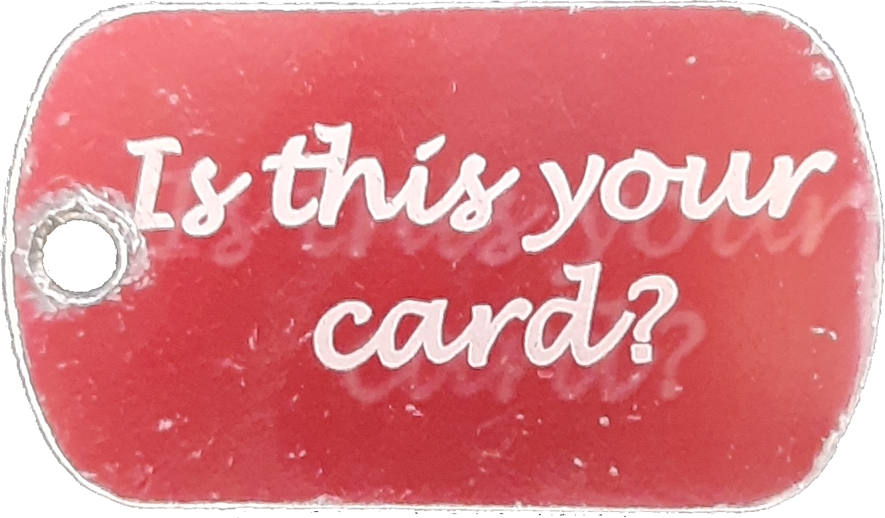
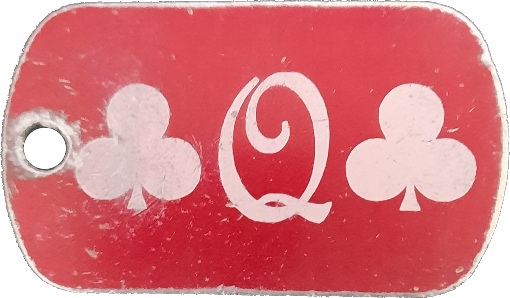
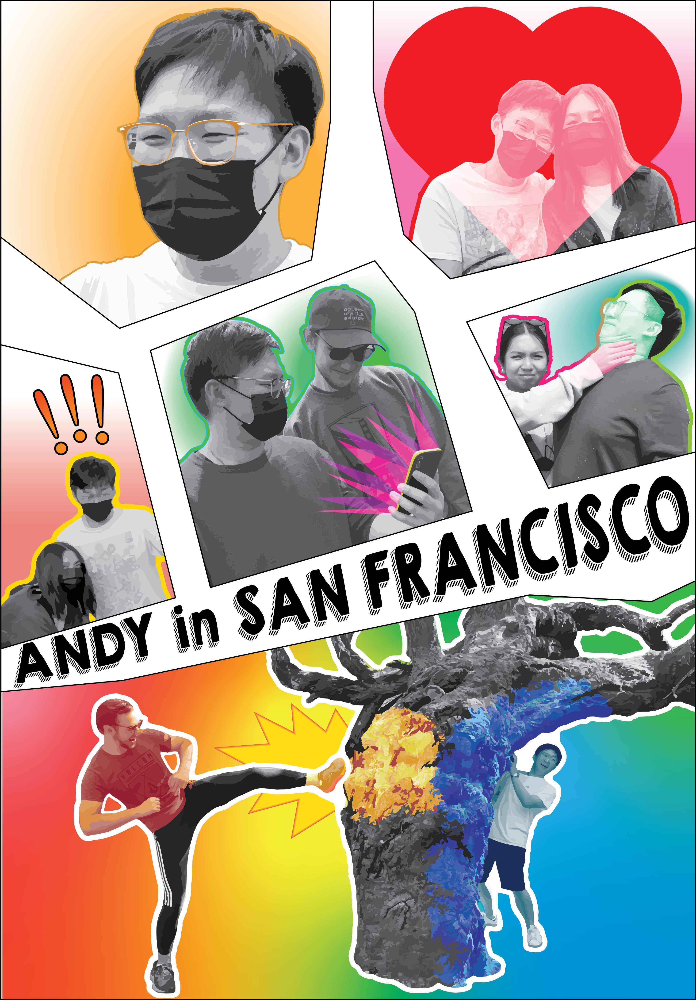
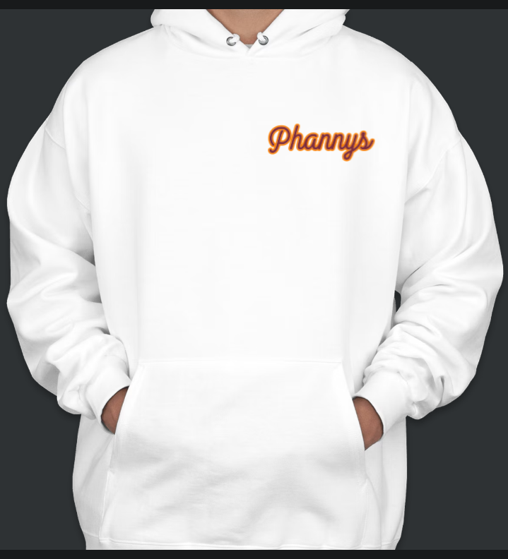
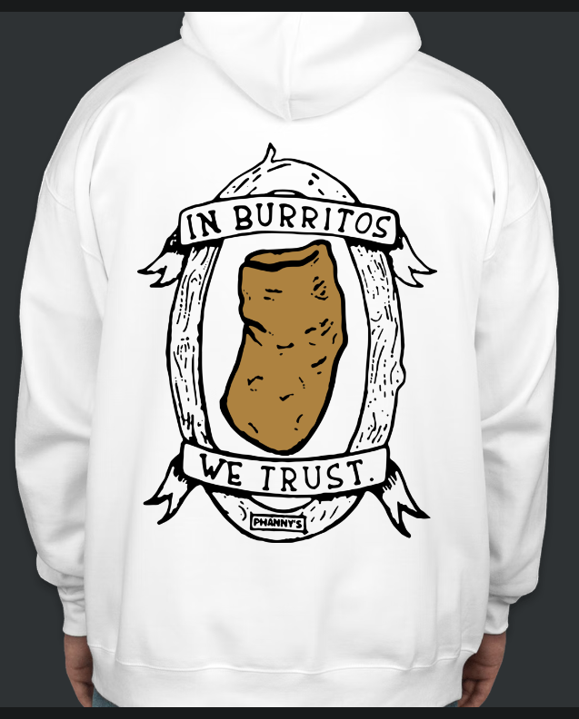

---
# front matter tells Jekyll to process Liquid
title: About
header: About Me
---
<div class="about">
    <h1>About page</h1>
    <!-- ## Design specialties:
Leadership, UI design, implementing robust systems. -->

    <h2>Statement of Purpose:</h2>

    <p>When it comes to showing what other people mean to me, I communicate through design.</p>

    <p>Laser cutting an inside joke on a dog tag.</p>
    
    
    <p>Making a comic book-style collage of my best friend using the photos from a vacation of ours.</p>
    

    <p>Designing a hoodie for my favorite breakfast burrito place because of the shared memories of inviting countless
        individuals there all of whom mean the world to me.</p>
    
    

    <p>Words will never accurately describe the potent, sentimental emotions I have for them. But the designs I create
        come close.</p>

    <p>This is why I create. To communicate to others the core beliefs and feelings I have towards them, the world, or
        myself.
        In everything I create, I strive to express myself with complete sincerity in the hopes that people will
        understand my message on a deeper level than words could ever convey. In collaborative projects, I strive to
        uphold the shared ideals and dreams of the group by having those goals be reflected within the end product. For
        me, the design isn't about me. It's what I'm all about.</p>

</div>